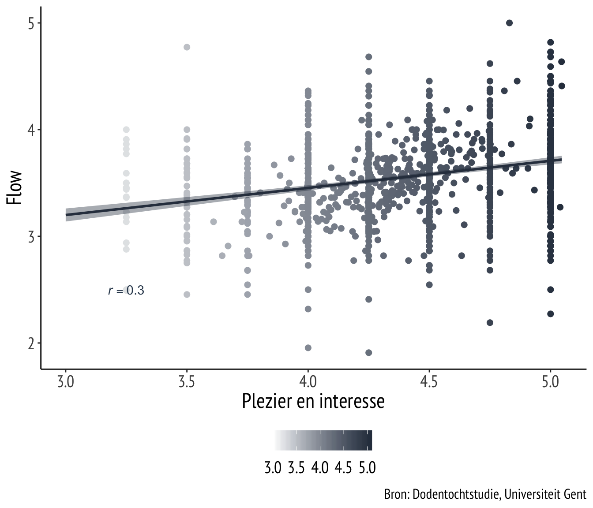

“De grootheid van een mens is niet te meten aan zijn verwezelijkingen, maar aan zijn aspiraties…”
- Een wandelaar na zijn opgave in 1981.
Welkom op de resultatenpagina van de Dodentochtstudie.
Via deze webpagina wensen we u op de hoogte te brengen van alle (eerste) resultaten die volgen uit de Dodentochtstudie (augustus, 2019). In deze eerste update bespreken we de volgende vragen:
Meer informatie over de studie kan u steeds terugvinden op de onderzoekspagina
Gemiddeld hadden deelnemers een leeftijd van 43.4 jaar, gaande van 18 tot 77 jaar. Er deden meer mannen dan vrouwen mee aan het onderzoek.
Het percentage wandelaars dat deelnam aan ons onderzoek is vergelijkbaar met het totaal aantal wandelaars dat deelnam aan de Dodentocht.
Na de Dodentocht wisten nog 875 wandelaars de vragenlijst in te vullen over hun ervaring en belevingen van hun Dodentocht 2019.
In de eerste vragenlijst, die een week voor de Dodentocht werd ingevuld, vroegen we aan deelnemers welke doelen ze zich stelden voor hun deelname aan de Dodentocht. Voorbeelden hiervan zijn:
“… omdat ik mijn deelname leuk, plezierig en interessant vind.”
“… omdat ik mijn deelname als iets persoonlijks belangrijk, waardevol en zinvol vind.”
“… omdat ik mijn deelname als een persoonlijke plicht zie en ik me anders slecht, schuldig of beschaamd zou voelen indien ik het niet zou doen.”
“… omdat ik mezelf dien te bewijzen tegenover anderen. Het wordt van mij verwacht dat ik dit doe.”
\(\rightarrow\) Bevindingen:
- Een vergelijking tussen de vier bovenstaande grafieken laat zien dat vele wandelaars vooral deelnamen omdat ze het plezierig vinden deel te nemen aan de Dodentocht en omdat ze hun deelname als waardevol en zinvol zien. Beide grafieken hebben een piek meer naar rechts of naar hogere scores.
- Weinig wandelaars zien hun deelname als een verplichting om zich te bewijzen tegenover **_de ander_**. Deze grafiek heeft een piek meer naar links of naar lagere scores.
- De derde grafiek toont aan dat de scores voor het motivatietype 'Plicht' verdeeld zijn. Dit wil zeggen dat redelijk veel wandelaars hun deelname als **_een persoonlijke plicht_** zien, dit om zich te bewijzen tegenover zichzelf met negatieve gevolgen bij een mislukking. Deze grafiek heeft geen piek en is vrij verdeeld over alle scores.
\(\rightarrow\) Bevinding: Hoe meer wandelaars deelnamen omdat ze het boeiend en leuk vonden om deel te nemen aan de Dodentocht, hoe meer ‘flow’ ze achteraf aangaven te hebben ervaren.
\(\rightarrow\) Bevinding: Hoe meer wandelaars deelnamen omdat ze hun deelname zinvol en persoonlijk belangrijk vonden, hoe meer ze hun deelname achteraf als waardevol, fantastisch en leerrijk zagen.
.
\(\rightarrow\) Bevinding: Hoe meer wandelaars deelnamen omdat ze het als hun plicht zagen om deel te nemen, hoe meer ze rapporteerden nerveus te zijn voor hun deelname.
.
\(\rightarrow\) Bevinding: Hoe meer wandelaars deelnamen omdat ze zich dienden te bewijzen tegenover anderen, hoe meer pijn en fysieke last ze achteraf aangaven te hebben ervaren.
.
Naast de eerste resultaten die we hierboven bondig omschreven, liggen er nog vele plannen op tafel voor de toekomst. We stellen ze graag aan u voor:
Ten eerste willen we in kaart brengen wat de functie is van jouw type motivatie. Zorgt het ene type motivatie voor een andere beleving? Heb je meer kans om aan te komen indien je anders gemotiveerd bent?
Ten tweede organiseren we op donderdag 5 maart 2020 om 20u een infoavond waarin de organisatie en het onderzoeksteam het verloop, de resultaten en de toekomstplannen van deze studie zullen presenteren en bespreken. Inschrijven voor deze avond kan via volgende link: Schrijf je hier in. Let op, plaatsen zijn beperkt.
Heb je vragen? Wil je meer te weten komen over een bevinding die je hierboven zag?
Contacteer ons gerust via onderstaande contactgegevens of bezoek onze onderzoekspagina via de website www.ugent.be/dodentocht
A work by Joachim Waterschoot